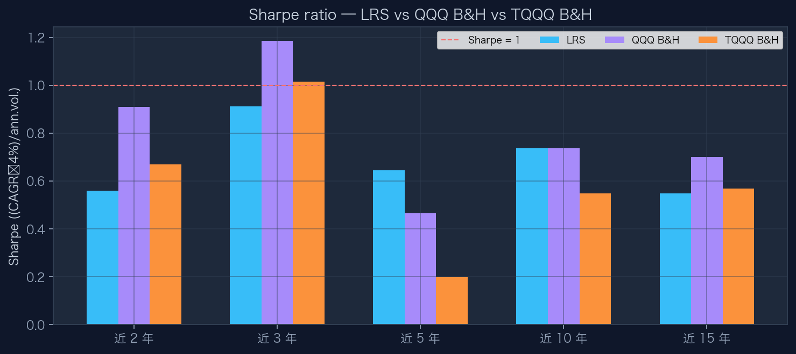
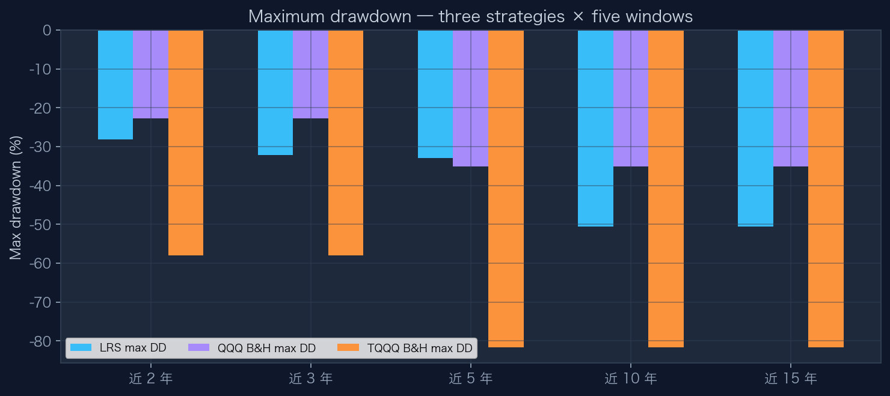
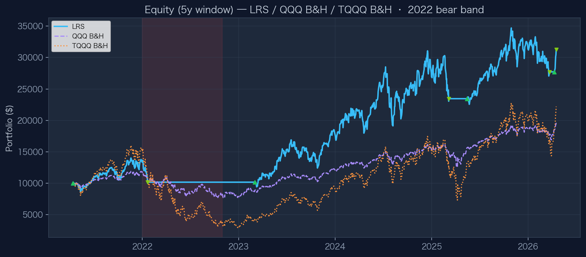

03 · 3.2
风险调整指标
Sharpe · Max DD · 5Y Equity · LRS / QQQ / TQQQ B&H
C
Sharpe 对比
(年化 CAGR − 4%) / 年化波动；虚线 Sharpe = 1

D
最大回撤
三策略：LRS / QQQ 买入持有 / TQQQ 买入持有

E
近 5 年权益曲线
红底：2022 熊市示意区间；三角：入场 / 出场

读图
Sharpe 与回撤
- Sharpe 用同一无风险利率假设（4%）便于跨策略比较
- TQQQ 买入持有波动极高，Sharpe 常低于 QQQ
- LRS 通过空仓降低路径依赖，回撤形态与纯多头不同
读图
权益曲线 E
- 三条曲线同一初始资金与同一时间轴
- 绿色上三角为策略入场，下三角为平仓（颜色区分盈亏）
- 与基准对比时关注相对路径而非单日噪声